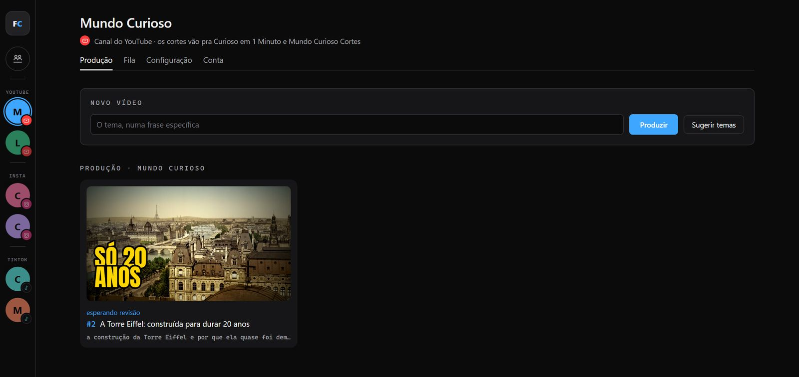
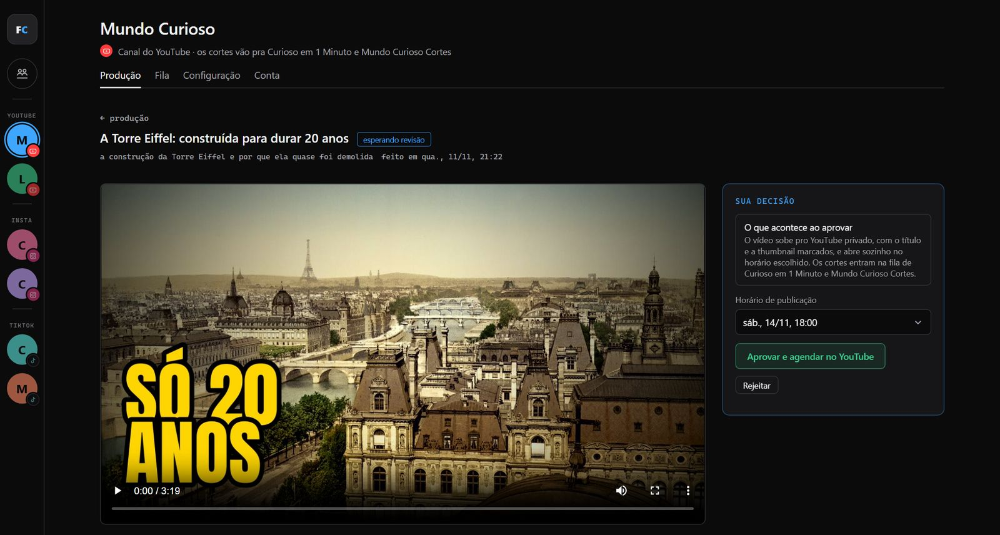
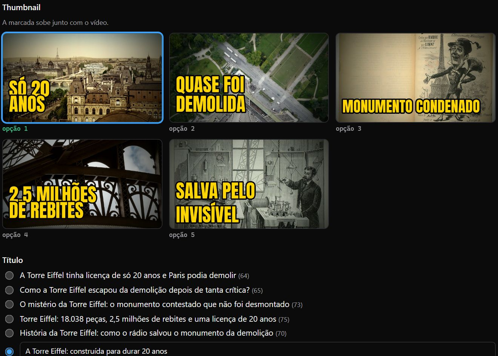
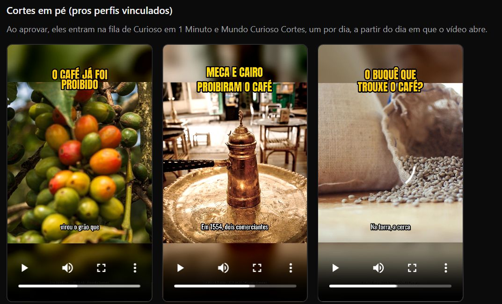
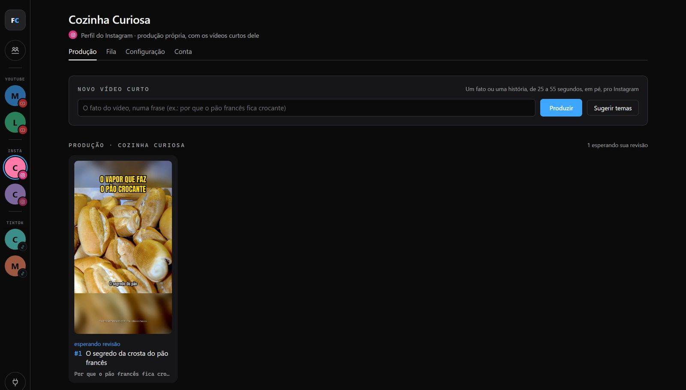
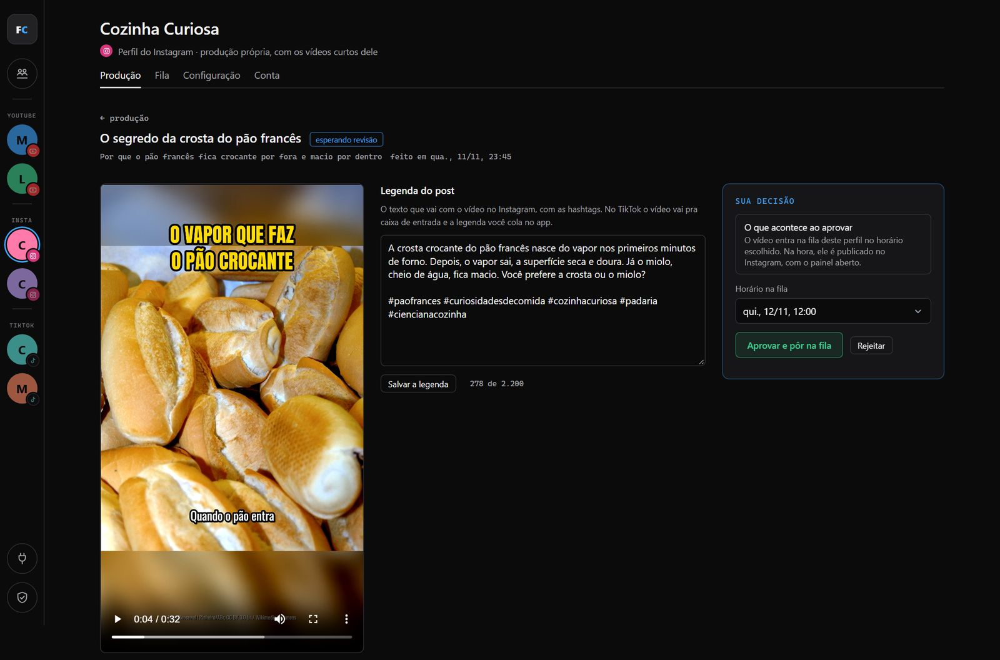
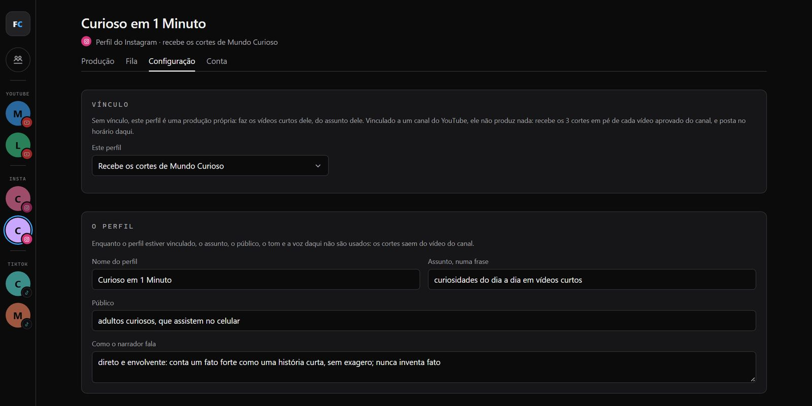
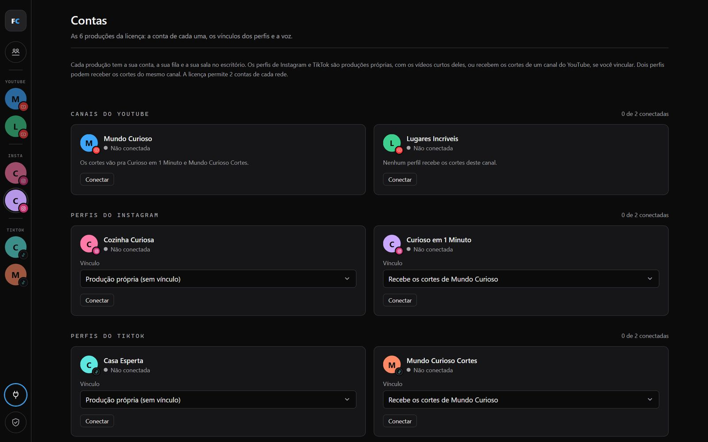

Seu canal com vídeo novo todo dia. Sem gravar, sem editar, sem aparecer.
É a fábrica que você vê no @viralcity.jogo, numa versão pra instalar no seu computador. Você escolhe o assunto. Ela pesquisa, escreve o roteiro, narra, monta, faz as thumbnails e deixa o vídeo pronto pro YouTube, pro Instagram e pro TikTok. Você só assiste e aprova.
Toque em "Toque pra ouvir" e assista para garantir seu acesso à Fábrica.
A venda abre em breve. Acompanhe o @viralcity.jogo pra saber quando.
O que mata um canal não é falta de ideia
É o trabalho. Pra sair um vídeo, alguém precisa pesquisar, escrever o roteiro, gravar a narração, caçar imagem que pode usar, editar, fazer a thumbnail, pensar no título, escrever a descrição e ainda cortar pro Reels e pro TikTok. Faz isso três vezes e o canal para. E canal parado não cresce.
Você tem o assunto
Sabe sobre o que quer falar, mas não tem um dia inteiro livre pra cada vídeo.
Você não quer aparecer
Nem a sua cara, nem a sua voz. Quer um canal que funcione sem depender de você na frente da câmera.
Você precisa de constância
Um vídeo hoje, outro amanhã, e os cortes saindo nas redes todo dia, sem você viver dentro de um editor.
A Fábrica de Conteúdo faz esse trabalho inteiro por você. O seu trabalho passa a ser um só: assistir e aprovar.
Uma equipe inteira, dentro do seu computador
Cada etapa que um canal grande paga pra alguém fazer, a Fábrica faz sozinha. No YouTube, o formato é o documentário narrado: um vídeo longo, contado como uma história, com fonte pra cada fato.
- 1
O pesquisador
Procura o tema na web e guarda a fonte de cada fato.
- 2
O roteirista
Escreve a narração como uma história, com gancho no começo, no tom do seu canal.
- 3
O revisor
Confere cada frase contra a pesquisa. Fato inventado não passa.
- 4
O narrador
Grava a voz com o Gemini, do Google, na voz e no ritmo que você escolher. Você não fala nada.
- 5
O pesquisador de imagens
Escolhe, olhando uma por uma, imagens de licença livre, com o crédito certo na descrição.
- 6
O editor
Monta voz e imagem com movimento e legenda. Música de fundo, se você puser as suas na pasta de músicas.
- 7
O designer e o social media
5 thumbnails pra você escolher, opções de título, descrição com capítulos e as tags.
- 8
O cortador
3 cortes em pé de cada vídeo, com gancho e legenda grande, pros seus perfis de Instagram e TikTok.
Um tema vira quatro posts
Você escreve uma frase. Sai um vídeo longo pro YouTube e três cortes em pé pro Instagram e pro TikTok, do mesmo roteiro, com a mesma voz.
Trechos de um vídeo de teste sobre o café e de um dos cortes dele, sem som aqui na página. O assunto é seu: a Fábrica faz o vídeo do tema que você pedir.
E se você só quer Reels e TikTok?
Também dá. Cada perfil de Instagram e de TikTok pode ter a produção dele, com o assunto dele, ou receber os cortes de um dos seus canais do YouTube.
Sem vínculo: os vídeos curtos dele
O perfil vira uma produção própria, com o assunto dele: um fato ou uma história que se sustenta sozinha, de 25 a 55 segundos, em pé. A Fábrica pesquisa, escreve com o gancho na primeira frase, confere contra a pesquisa, narra, escolhe as imagens, monta e escreve a legenda com hashtags. Você revisa e aprova.
Com vínculo: os cortes de um canal
Ligado a um canal do YouTube, o perfil não produz nada: recebe os 3 cortes em pé de cada vídeo aprovado do canal. Dois perfis podem receber os cortes do mesmo canal, por exemplo um Instagram e um TikTok.
Não é promessa. É o programa.
Essas são as telas de verdade. O programa roda no seu computador e abre no navegador, como um site: escrever o tema, clicar em Produzir e, depois, assistir e aprovar.
PRODUÇÃO DE UM CANAL
Uma frase e um clique
Cada vídeo aparece aqui com a thumbnail e a situação dele. Sem ideia de tema? O botão Sugerir temas propõe assuntos pro seu canal.
- Se parar no meio, continua de onde parou
- As 6 produções no menu da esquerda, cada uma com a sua lista

REVISÃO
Você assiste antes de tudo
O vídeo pronto fica esperando a sua revisão. Você assiste, escolhe o horário e clica em Aprovar e agendar no YouTube. Não gostou? Rejeitar.
- Sobe privado e abre sozinho no horário escolhido
- Os cortes vão pros perfis ligados ao canal

THUMBNAIL E TÍTULO
5 thumbnails e os títulos já prontos
Marque a thumbnail que sobe com o vídeo e escolha um dos títulos, ou escreva o seu. A descrição já vem com capítulos, fontes e créditos das imagens, e as tags também.

CORTES EM PÉ
3 cortes por vídeo, prontos pras redes
Ao aprovar o vídeo, os cortes entram na fila dos perfis ligados ao canal, um por dia em cada conta, no horário de cada perfil, a partir do dia em que o vídeo abre.

PRODUÇÃO DE UM PERFIL
Os vídeos curtos de um perfil
No perfil sem vínculo, você escreve o fato do vídeo numa frase, ou pede sugestões, e a Fábrica faz o vídeo curto em pé, de 25 a 55 segundos.

REVISÃO DO CURTO
Assista, ajuste a legenda e aprove
O vídeo curto vem com a legenda do post e as hashtags, que você pode mudar. Aprovar põe o vídeo na fila do perfil, no horário que você escolher.

VÍNCULO
Você decide o que cada perfil faz
Na Configuração do perfil, o Vínculo diz se ele é uma produção própria ou se recebe os cortes de um canal. E ali ficam o assunto, o público, o tom do narrador, a voz, os dias e a hora de postar, e o maestro.

CONTAS
As 6 produções numa tela só
A conta de cada canal e de cada perfil, o vínculo dos perfis e a chave da voz, tudo no mesmo lugar.

Você aprova. Ela agenda e posta.
O controle é seu: nada sai do seu computador sem o seu clique. Depois dele, você não precisa abrir o YouTube, o Instagram nem o TikTok pra postar.
- 1ProduzVocê pede, ou o maestro produz no horário dele.
- 2Você revisaAssiste, escolhe a thumbnail, o título e o horário.
- 3Você aprovaSó aqui algo sai do seu computador.
- 4Ela agendaO vídeo no YouTube, e os curtos e os cortes na fila de cada perfil.
YouTube
O vídeo sobe privado, com o título e a thumbnail marcados, e abre sozinho no horário escolhido.
Um post por dia em cada perfil. O vídeo sai sozinho na hora marcada, com o programa aberto no seu computador.
TikTok
Um por dia em cada perfil. O vídeo chega como rascunho na caixa de entrada do app, e você publica pelo celular.
E você vê a sua equipe trabalhando
A Fábrica tem um escritório em pixel art, o mesmo que aparece nos meus vídeos. Cada produção tem a sua sala e o seu agente, e você vê, ao vivo, quem está pesquisando, escrevendo, gravando a voz ou montando o seu vídeo.
O agente anda até o posto da etapa que está fazendo. Quando não tem vídeo pra fazer, vai pra sala de jogos ou de descanso. Você dá zoom, arrasta, clica pra seguir um agente e, no modo construção, muda, tira e põe móveis.
- PESQUISAna estante
- ROTEIROna mesa
- VOZna cabine
- THUMBNAILno cavalete
Uma compra, seis produções
Dois canais do YouTube de assuntos diferentes, e quatro perfis nas redes, cada um com o assunto, a voz, o horário e o agente dele. Comece com um só e ligue os outros quando quiser.
O que você precisa
A Fábrica roda com as suas contas, no seu computador: os canais e os vídeos são seus, e ninguém fica no meio. Antes de comprar, confira se você tem, ou pode ter, tudo isso.
- PCUm computador com Windows 10 ou 11O programa é pra Windows. Não roda no Mac nem no celular.
- IAA assinatura do Claude, com o Claude Code instaladoÉ ela que pesquisa e escreve, com o seu login. O plano Pro serve pra começar; quanto mais vídeos por dia, maior o plano que você vai precisar.
PAGA À PARTE, DIRETO NA ANTHROPIC - VOZUma chave grátis do GeminiTirada no Google AI Studio, pra narração. A cota grátis tem limite por dia, e você pode colar mais de uma chave.
GRÁTIS - NETInternet e o programa abertoPra produzir, publicar a fila do Instagram e conferir a licença.
O que eu não vou te prometer
Eu não vou te prometer views, inscritos nem dinheiro. Quem promete isso está mentindo: depende do seu assunto, do seu canal e do algoritmo. O que eu te entrego é o que trava quase todo mundo: o vídeo pronto, todo dia, sem você gastar o dia nele.
Você revisa cada vídeo antes de aprovar, e a decisão do que vai pro ar é sua.
A licença é pessoal e intransferível. A sua cópia do programa é pessoal, ligada à sua licença e ao seu computador. Trocar de computador ou de conta é pelo suporte.
Tudo o que você leva hoje
Um ano inteiro com um programa que pesquisa, escreve, narra, monta e agenda os seus vídeos todos os dias. Sem pagar editor, roteirista nem narrador por vídeo.
- O programa Fábrica de Conteúdo, pra Windows, num arquivo só, baixado do seu link pessoal
- Licença pra 6 produções: 2 canais do YouTube, 2 perfis do Instagram e 2 do TikTok
- No YouTube: o vídeo longo, com 5 thumbnails, títulos, descrição, tags e 3 cortes em pé
- No Instagram e no TikTok: os vídeos curtos de cada perfil, ou os cortes de um canal
- O maestro, que produz um vídeo por dia sozinho, se você ligar
- O escritório dos agentes
- O curso da Fábrica: instalar, configurar as contas e usar no dia a dia, passo a passo
- 1 ano de acesso, com todas as atualizações desse período, baixadas pelo mesmo link, sem perder os vídeos nem as contas
- Suporte pra trocar de computador ou de conta
A venda abre em breve. Acompanhe o @viralcity.jogo pra saber quando.
Não inclui a assinatura do Claude, que é paga à parte. Ver o que você precisa
Mudou de ideia? Pede o reembolso em até 7 dias e recebe todo o valor de volta. A licença é desligada no reembolso.
Perguntas
Preciso aparecer no vídeo ou gravar a minha voz?
Não. A narração é feita com a voz do Gemini, do Google, e as imagens vêm do Wikimedia Commons, com licença livre.
Preciso saber programar?
Não. Você usa o painel no navegador: escreve o tema, clica em Produzir, revisa e aprova. A parte de conectar as contas é feita uma vez, seguindo o curso da Fábrica, que mostra cada tela.
Quanto custa pra manter rodando?
A Fábrica sai por R$ 397 no preço de lançamento, em até 12x no cartão, com 1 ano de acesso. À parte, você paga a sua assinatura do Claude. A voz do Gemini tem uso grátis, com um limite por dia.
Serve pro meu assunto?
Os vídeos longos e os curtos são narrados com imagens de licença livre, então funcionam melhor em assuntos que têm imagem no Wikimedia Commons: curiosidades, como as coisas funcionam, lugares, natureza e invenções. Assunto sem imagem livre rende vídeos mais fracos.
Ela publica sozinha?
Só o que você aprovou. O vídeo longo vai agendado pro YouTube. No Instagram, o vídeo curto ou o corte sai na hora marcada, com o programa aberto no seu computador. No TikTok, ele chega como rascunho na caixa de entrada do app, e você publica pelo celular. É um post por dia em cada conta.
Preciso usar as 6 produções?
Não. Você usa só as que quiser: um canal do YouTube sozinho, por exemplo, ou só perfis com vídeos curtos. Cada perfil faz os vídeos curtos dele ou recebe os cortes de um canal, e isso se troca na Configuração.
Quantos vídeos por dia?
Você produz quando quiser, e o maestro pode fazer um por dia em cada canal e em cada perfil com vídeos curtos. O ritmo de verdade depende dos limites do seu plano do Claude e da cota do Gemini: com várias produções ligadas todo dia, você vai precisar de um plano maior do Claude.
Funciona no Mac ou no celular?
Não. O programa é pra Windows 10 ou 11.
Como recebo o programa e as atualizações?
Você baixa um arquivo só, o FabricaDeConteudo.exe, pelo seu link pessoal de download. Quando sai uma versão nova durante o seu ano de acesso, você baixa de novo pelo mesmo link, sem pagar nada, e os seus vídeos e as suas contas continuam lá. A versão antiga para de funcionar alguns dias depois de sair a nova, então vale baixar logo.
O acesso é pra sempre?
Não. O acesso é de 1 ano a partir da compra, com todas as atualizações desse período. Perto do fim, o programa avisa, e você renova pelo mesmo link da compra pra continuar, com os seus vídeos e contas guardados.
Posso usar em dois computadores ou passar pra outra pessoa?
Não. A licença é pessoal e intransferível, e a sua cópia do programa é ligada à sua licença e ao seu computador. Se você trocar de computador, o suporte solta a licença pra você ativar no novo.
Vem com o jogo do Viral City?
Não. Vem a Fábrica de Conteúdo, com o painel e o escritório dos agentes.
E se eu não gostar?
Você tem 7 dias de garantia. Pede o reembolso e recebe o valor de volta.
Daqui a um mês, onde você quer estar?
Você pode continuar adiando o canal porque não tem tempo de fazer vídeo. Ou pode ter uma fábrica trabalhando por você todo dia, e passar o seu tempo só escolhendo assunto e aprovando.
A venda abre em breve. Acompanhe o @viralcity.jogo pra saber quando.
Preço de lançamento: R$ 397, em até 12x · 1 ano de acesso · 7 dias de garantia